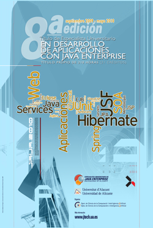

Especialista Universitario Java Enterprise, Curso 2009-2010
- Introducción
- Matrícula
- Profesorado
- Objetivos
- Contenidos
- Desarrollo
- Materiales
- Empresas
- Becas
- Otros cursos


Importante: la información sobre la nueva edición 2010-2011 se encuentra en http://www.ua.es/especialistajava.
Por octavo año consecutivo presentamos el Título Propio de Especialista Universitario en Desarrollo de Aplicaciones con Java Enterprise. Se trata de un título de postgrado de 210 horas organizado por el Departamento de Ciencia de la Computación e Inteligencia Artificial de la Universidad de Alicante e impartido de Septiembre de 2009 a Mayo de 2010.
{kind=link}
Más de 120 profesionales trabajando en empresas Java.
A lo largo de las siete ediciones previas del Título de Especialista, hemos formado con éxito a más de 120 profesionales que han incorporado sus enseñanzas a su labor profesional. Nuestros antiguos alumnos se encuentran trabajando en la actualidad en importantes empresas de desarrollo de software como Sistel, Recursos en la Red, Delta-R, Everis o Directive Soft. También han creado con éxito sus propias empresas de desarrollo, como i2e.
Especialización en Java Enterprise.
Java Enterprise Edition (Java EE) es el estándar de la industria para desarrollar aplicaciones Java portables, robustas, escalables y seguras en el lado del servidor (server-side). Java EE proporciona APIs para servicios web, modelo de componentes, gestión y comunicación que hacen lo convierten en el estándar de la industria para implementar aplicaciones web y web 2.0 y aplicaciones con arquitectura orientada a servicios (SOA).
Las tecnologías Java EE se usan en una gran variedad de aplicaciones de banca, administraciones públicas, sanidad o transportes. Java también es open source y comienza a utilizarse en aplicaciones y servicios web de pequeñas empresas. La necesidad de profesionales formados en estas tecnologías es permanente y el perfil profesional Java está muy valorado entre las empresas.
Formación de calidad y aplicada.
La experiencia de estos años nos permite ofrecer una formación de calidad, con claros objetivos y con contenidos bien definidos. En el Especialista hacemos especial hincapié en la aplicación práctica y en las metodologías. Además de enseñar en profundidad las tecnologías Java Enterprise, también estudiamos cómo aplicarlas para resolver problemas concretos, cómo afrontar un proyecto de desarrollo o qué arquitectura software debe tener la aplicación. El reducido número de estudiantes nos permite una formación muy personalizada orientada a formar excelentes profesionales.
Materiales docentes de primera.
En el Especialista te proporcionamos materiales docentes de primera calidad, elaborados por nosotros en su totalidad. Los apuntes, ejercicios guiados, tutoriales y transparencias completan más de 3.000 páginas de información. Entre el material se encuentra también un DVD repleto de software y un lápiz USB para guardar todos los ejercicios y prácticas que vas desarrollando a lo largo de todo el año.
Podrás también acceder al sitio web del Especialista para consultar on-line todo el material que te entregamos en papel. Y, lo más importante, podrás hacerlo no sólo este curso, sino para siempre. De esta forma, como antiguo alumno, podrás estar al tanto de todos los cambios que introduzcamos en las próximas ediciones del Especialista. Formación de calidad para toda la vida.
Últimas tendencias en metodologías y tecnologías.
Estamos a la última. En el Especialista estudiamos las últimas tendencias en desarrollo de aplicaciones (métodos ágiles o programación extrema) y las últimas novedades tecnológicas en Java y desarrollo web (Struts 2, jMaki, JPA, EJB 3.0, Spring, GlassFish, Eclipse o NetBeans). Todos los años renovamos nuestros materiales docentes para incorporar todas estas novedades.
Formación completa.
Desde el Título de Especialista organizamos también otras actividades destinadas a divulgar las tecnologías Java, como jornadas de conferencias (Jornada de Tecnologías Java) o cursos específicos para estudiantes universitarios y para empresas.
Información actualizada
Si estás interesado en recibir información adicional sobre el Especialista y sobre actividades complementarias (cursos y charlas), puedes subscribirte a las RSS del blog del Especialista y al grupo de Google JTech.
© 2002-2010 Especialista Unversitario Java Enterprise